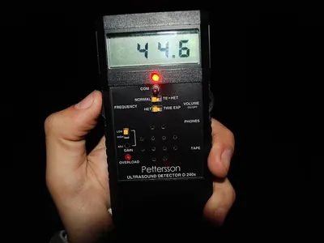
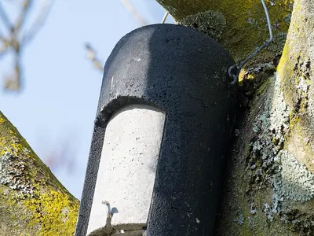

Ausrüstung für Waldbeobachter
Für die meisten Begegnungen brauchst du nur Geduld, gute Ohren und Wind von vorn. Diese Dinge machen es leichter, vor allem in der Dämmerung.
Beobachten
- Unser Tipp
Celestron Nature DX 8x42
Celestron
Helles Einsteigerglas für die Dämmerung: 8-fache Vergrößerung, wasserdicht und leicht genug für lange Ansitze.
Bei Amazon ansehen Celestron Nature DX 8x42 (Werbelink, öffnet in neuem Fenster) - Beispielfoto · Foto: Vitaly V. Kuzmin, CC BY-SA 4.0 – Lizenzangaben im Bildnachweis

Wärmebildkamera für Naturbeobachtung
Auswahl bei Amazon
Zeigt warme Tierkörper auch in völliger Dunkelheit und hinter dünnem Gebüsch. So entdeckst du Reh, Fuchs oder Dachs, ohne Licht zu machen.
Bei Amazon ansehen Wärmebildkamera für Naturbeobachtung (Werbelink, öffnet in neuem Fenster) - Beispielfoto · Foto: DYVER, CC BY-SA 4.0 – Lizenzangaben im Bildnachweis
 Unser Tipp
Unser TippWildkamera mit Nachtsicht
Auswahl bei Amazon
Zeigt dir, wer nachts am Bau oder an der Futterstelle vorbeikommt. Achte auf unsichtbares Infrarot (No-Glow), damit die Tiere nicht gestört werden.
Bei Amazon ansehen Wildkamera mit Nachtsicht (Werbelink, öffnet in neuem Fenster) - Beispielfoto · Foto: jd, Public Domain – Lizenzangaben im Bildnachweis

Stirnlampe mit Rotlicht
Auswahl bei Amazon
Rotes Licht blendet Tiere kaum und schont deine Nachtsicht, ideal für Kröten- und Salamanderabende.
Bei Amazon ansehen Stirnlampe mit Rotlicht (Werbelink, öffnet in neuem Fenster)
Spuren und Fraßspuren
- Beispielfoto · Foto: Dat doris, CC BY-SA 4.0 – Lizenzangaben im Bildnachweis
 Unser Tipp
Unser TippBestimmungsbuch Tierspuren
Auswahl bei Amazon
Ein Spurenführer mit Zeichnungen der Trittsiegel in Originalgröße hilft draußen beim Vergleichen.
Bei Amazon ansehen Bestimmungsbuch Tierspuren (Werbelink, öffnet in neuem Fenster) - Beispielfoto · Foto: Gormo, CC0 – Lizenzangaben im Bildnachweis

Modellgips für Spurenabdrücke
Auswahl bei Amazon
Mit etwas Gips hältst du ein Trittsiegel aus dem Matsch dauerhaft fest. Ein schönes Projekt für Kinder und Spurensammler.
Bei Amazon ansehen Modellgips für Spurenabdrücke (Werbelink, öffnet in neuem Fenster) - Beispielfoto · Foto: KENPEI, CC BY-SA 3.0 – Lizenzangaben im Bildnachweis

Einschlaglupe 10-fach
Auswahl bei Amazon
Für Fraßspuren an Nüssen und Zapfen: Zahnspuren werden mit der Lupe eindeutig.
Bei Amazon ansehen Einschlaglupe 10-fach (Werbelink, öffnet in neuem Fenster) - Beispielfoto · Foto: Gilles San Martin, CC BY-SA 2.0 – Lizenzangaben im Bildnachweis

Fledermaus-Detektor
Auswahl bei Amazon
Macht die Ultraschallrufe der Fledermäuse hörbar. Schon einfache Geräte zeigen, wer über dem Weg jagt.
Bei Amazon ansehen Fledermaus-Detektor (Werbelink, öffnet in neuem Fenster)
Für Garten und Waldrand
- Beispielfoto · Foto: 14GTR, CC BY-SA 4.0 – Lizenzangaben im Bildnachweis

Igelhaus für den Garten
Auswahl bei Amazon
Ein geschützter Platz für den Winterschlaf. Stelle es an eine ruhige, schattige Stelle unter Hecken oder Laub.
Bei Amazon ansehen Igelhaus für den Garten (Werbelink, öffnet in neuem Fenster) - Beispielfoto · Foto: Marie-Lan Taÿ Pamart, CC BY 4.0 – Lizenzangaben im Bildnachweis

Fledermauskasten aus Holzbeton
Auswahl bei Amazon
Ersatzquartier für Fledermäuse wie das Braune Langohr. In drei bis fünf Metern Höhe aufhängen, möglichst ohne Lampe in der Nähe.
Bei Amazon ansehen Fledermauskasten aus Holzbeton (Werbelink, öffnet in neuem Fenster) - Beispielfoto · Foto: Richard Webb, CC BY-SA 2.0 – Lizenzangaben im Bildnachweis

Futterkasten für Eichhörnchen
Auswahl bei Amazon
Mit Klappdeckel, damit Vögel nicht mitfressen. Am Baumstamm aufgehängt, siehst du die Kletterer aus nächster Nähe.
Bei Amazon ansehen Futterkasten für Eichhörnchen (Werbelink, öffnet in neuem Fenster)
Werbelink: Wenn du über diesen Link etwas kaufst, erhält der Waldtierkompass eine kleine Provision von Amazon. Für dich ändert sich am Preis nichts. Als Amazon-Partner verdiene ich an qualifizierten Verkäufen.
Worauf es beim Fernglas ankommt
Für die Dämmerung ist ein 8x42 oder 10x42 ideal: Die zweite Zahl ist der Durchmesser der Objektive in Millimetern. Je größer, desto heller das Bild, wenn Reh und Fuchs am Waldrand auftauchen. Achte auf Wasserdichtigkeit und darauf, dass das Glas dir nach einer Stunde noch nicht zu schwer ist.
Wildkameras rücksichtsvoll nutzen
Stelle Kameras nur mit Erlaubnis des Eigentümers oder Jagdpächters auf und richte sie nicht auf Wege, auf denen Menschen unterwegs sind. Fotos von Personen dürfen ohne deren Einwilligung nicht entstehen.